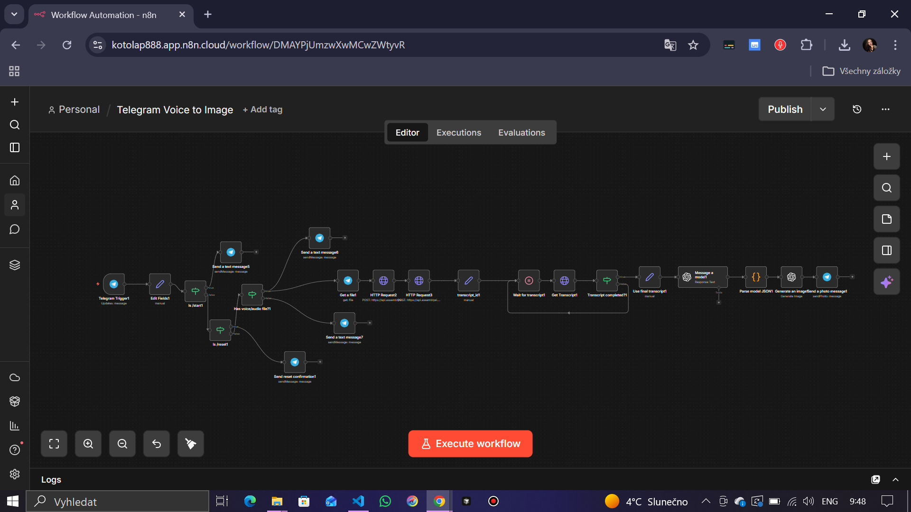

Creating visual content usually requires precise typing of prompts. Users often have visual ideas while speaking (voice notes), but the friction of transcribing and formatting prompts discourages them.
Challenge: Transcribing audio manually is slow. Automatic transcription needs to be high-quality. The text must then be intelligently transformed into a detailed image prompt, and finally rendered into an image — all seamlessly within a chat interface.
Goal: Build a Telegram bot that accepts voice/audio, transcribes it, generates a creative image prompt, creates the image, and returns it to the user instantly.
An event-driven n8n workflow triggers on new Telegram messages. It validates the input (voice/audio), handles commands (/start, /reset), and processes audio via AssemblyAI. A polling loop ensures the transcript is ready before sending it to GPT-4 for prompt engineering, followed by DALL-E generation.

Ти — асистент, який генерує зображення СУВОРО за останнім запитом користувача.
КРИТИЧНО ВАЖЛИВО:
- Використовуй ТІЛЬКИ поточний текст транскрипції.
- Повністю ігноруй попередні теми, стилі, персонажів...
- Кожен новий запит обробляється як повністю новий незалежний сценарій.
ФОРМАТ ВИХОДУ (ОБОВʼЯЗКОВО):
Поверни ТІЛЬКИ валідний JSON.
{
"caption": "Українською, 50-200 символів, з emoji",
"image_prompt": "English, 60-150 words, detailed visual description",
"tts_text": "Українською, 1-2 речення"
}
... (Full prompt includes constraints for style, mood, lighting, prohibited content handling)
// Parse JSON returned as text by 'Message a model1'
const chat_id = $node["Edit Fields1"].json.chat_id;
const raw = $json?.output?.[0]?.content?.[0]?.text ?? $json?.text ?? "";
let parsed;
try {
parsed = JSON.parse(raw);
} catch (e) {
throw new Error("Model did not return valid JSON. Raw: " + raw.slice(0, 400));
}
return [{
json: {
chat_id,
caption: parsed.caption ?? "",
image_prompt: parsed.image_prompt ?? "",
tts_text: parsed.tts_text ?? ""
}
}];
Download the full n8n workflow JSON (Telegram Voice to Image) and import it into your n8n instance.